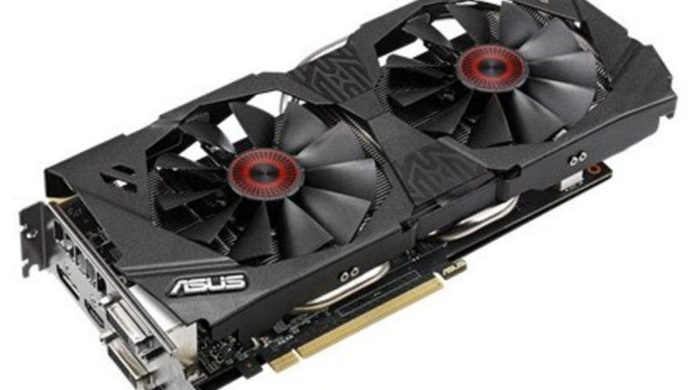
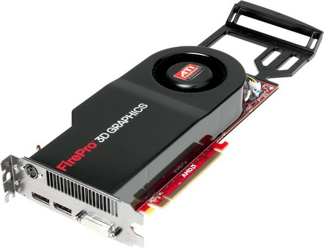
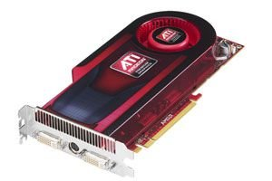
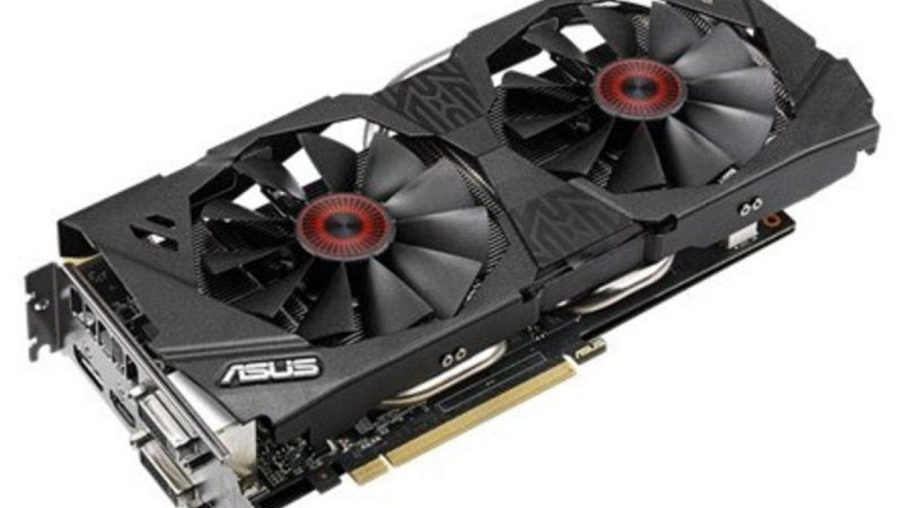
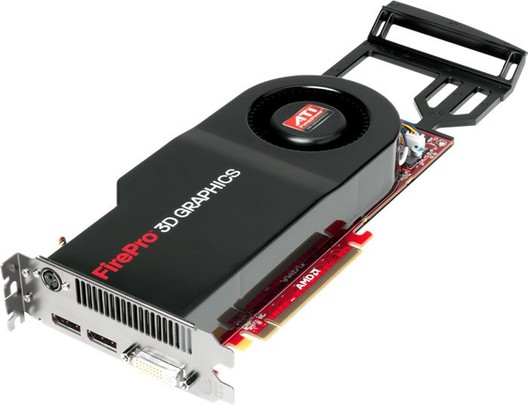
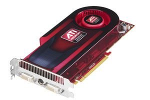

Tipos de tarjetas gráficas:
Tarjeta MDA
"Monochrome Display Adapter" o Adaptador monocromo. Fue lanzada por IBM como una memoria de 4 KB de forma
EGA Paradise Bus ISA
exclusiva para monitores TTL (que representaban los clásicos caracteres en ámbar o verde). No disponía de gráficos
y su única resolución era la presentada en modo texto (80x25) en caracteres de 14x9 puntos, sin ninguna posibilidad de configuración.
Básicamente esta tarjeta usa el controlador de vídeo para leer de la ROM la matriz de puntos que se desea visualizar y se envía al monitor
como información serie. No debe sorprender la falta de procesamiento gráfico, ya que, en estos primeros PC no existían aplicaciones que
realmente pudiesen aprovechar un buen sistema de vídeo. Prácticamente todo se limitaba a información en modo texto.
Este tipo de tarjeta se identifica rápidamente ya que incluye (o incluía en su dia) un puerto de comunicación para la impresora ¡Una asociación más que extraña a día de hoy!
Tarjeta CGA
"Color Graphics Array" o "Color graphics adapter" según el texto al que se recurra. Aparece en el año 1981 también
AVIEW2E EISA
de la mano de IBM y fue muy extendida. Permitía matrices de caracteres de 8x8 puntos en pantallas de 25 filas y 80 columnas, aunque solo usaba 7x7 puntos para
representar los caracteres. Este detalle le imposibilitaba el representar subrayados, por lo que los sustituía por diferentes intensidades en el caracter en cuestión.En
modo gráfico admitía resoluciones de hasta 640x200. La memoria era de 16 KB y solo era compatible con monitores RGB y Compuestos. A pesar de ser superior a la MDA, muchos
usuarios preferían esta última dado que la distancia entre puntos de la rejilla de potencial en los monitores CGA era mayor. El tratamiento del color, por supuesto de modo
digital, se realizaba con tres bits y uno más para intensidades. Así era posible lograr 8 colores con dos intensidades cada uno, es decir, un total de 16 tonalidades diferentes
pero no reproducibles en todas las resoluciones tal y como se muestra en el cuadro adjunto.
Esta tarjeta tenia un fallo bastante habitual y era el conocido como "snow".
Este problema era de caracter aleatorio y consistía en la aparición de "nieve" en la pantalla
(puntos brillantes e intermitentes que distorsionaban la imagen). Tanto era así que algunas BIOS de la época incluían en su SETUP la opción de eliminación de nieve ("No snow").
Tarjeta HGC
"Hercules Graphics Card" o más popularmente conocida como Hércules (nombre de la empresa productora), aparece
IBM XGA-2 MCA
en el año 1982, con gran éxito convirtiéndose en un estándar de vídeo a pesar de no disponer del soporte de las rutinas
de la BIOS por parte de IBM. Su resolución era de 720x348 puntos en monocromo con 64 KB de memoria. Al no disponer de color, la
única misión de la memoria es la de referenciar cada uno de los puntos de la pantalla usando 30,58 KB para el modo gráfico (1 bit x 720 x 348) y
el resto para el modo texto y otras funciones. Las lecturas se realizaban a una frecuencia de 50 HZ, gestionadas por el controlador de vídeo 6845. Los caracteres se dibujaban en matrices de 14x9 puntos.

Pasos detallados
Configuración normal o para trabajar
Primero vamos a empezar con una configuración común y corriente, presuponiendo que estás trabajando con aquella
que viene originalmente con el ordenador.
Para este tipo de configuraciones básicas haz los pasos son los siguientes:
Ve al buscador del Inicio, busca “Pantalla”:
Aquí dentro puedes encontrar varias opciones
Puedes testear y probarlas, siempre puedes volver al punto anterior si no te convencen.
Para ir a configuraciones de color:
Ve al buscador del Inicio, busca “Colores”
Accede a la sección “Configuración de color”
Como antes, puedes testear y probar ¡Siempre hay tiempo para volver atrás!
Esta seria la configuración básica y normal de una tarjeta gráfica sencilla, existen otro tipo de tarjetas y usos que vamos a ver a continuación.
Configurar tarjeta gráfica para juegos y películas
Esta parte la vamos a centrar en tarjetas gráficas NVIDIA (lo son la mayoría) ya que son las más comunes y más usadas.
Recuerda que para tener juegos de alta calidad y películas en excelente resolución es recomendable tener una tarjeta gráfica especializada, si no la tienes, la configuración anterior es más que suficiente.
Ahora bien, en esta explicación los valores de color, contraste y resolución se aplican perfectamente a cualquier otra tarjeta gráfica, así que tenlo en cuenta.
Para configurar una tarjeta gráfica NVIDIA, debes cumplir con los siguientes procedimientos:
1. Entra al panel de control de NVIDIA haciendo clic derecho en cualquier parte del escritorio.
2. Luego podrás observar las cuatro opciones para configurar tu tarjeta gráfica: 3D estereoscópica, configuración 3D, pantalla y vídeo.
3. Ahora, debes centrarte en dos de estas opciones, pantalla y configuración 3D. En configuración 3D vas a la primera opción “Ajustar la configuración de la imagen con vista previa”.
Después de esto, presionas en la opción “Utilizar mi preferencia a enfatizando…” Luego arrastrar todo el cursor de abajo hacia rendimiento.
4. Después de esto puedes ajustar la pantalla donde puedes configurar la resolución y el refresco. Lo recomendable es que coloques los hertz al mismo nivel de los FPS (para saber la cantidad de FPS que soporta tu tarjeta debes ver sus características técnicas).
5. En vídeo puedes ajustar los brillos y coloración, por lo general coloca un poco más de contraste y ajusta los brillos conforme veas conveniente.
Y listo!!!!
Información recolectada de www.ecured.cu y tutorialesgratuitos.com
 




